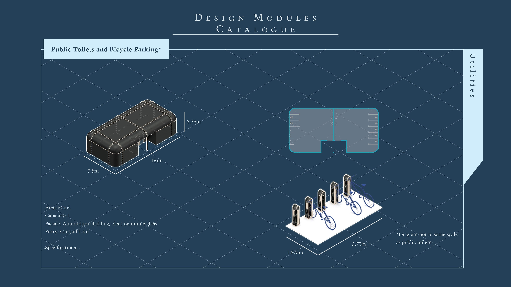
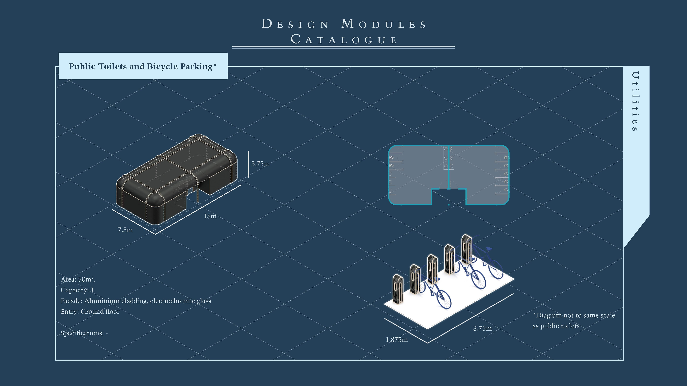

Summary
Play is an intrinsic part of all of us. It is an important aspect in every stage of our lives due to the positive benefits it can potentially bring to all of us. However, people tend to only confine and associate it with children. So what about play that caters for all other ages? Can more interventions start to cater for adult populace as well? In present times, there is seen to be an increase in the growth of shift towards an experience-driven economy, where people are now willing to pay for fresh and new experiences. With changing demands, there is increased competition in allowing for experiences that are increasingly personal to each and every one of us. People begin seeking out experiences as a remedy in order to step away from everyday routines, release their stress and to have fun in the present. Architectural design and spaces now have the potential to become more adaptive. What can architecture do to create new and engaging experiences forth through intertwining playful programs into design for everyday activities and increase levels of wellbeing? This thesis comprises of an exploration and investigation into play and experiences. Research will be undertaken to determine how the aspects of experiences can be integrated with play and brought forth in an inclusive play setting for all to enjoy. Lastly, an effort will be made on how future of playscapes in Family Entertainment Centres will potentially be implemented in communities with the new social norms brought on by the pandemic; all these within the settings of an immersive and creative dimension that adapts to situational requirements. Advisor: Professor Daniel WhittakerAbout Me
M.Arch graduate from Singapore University of Technology & Design. Takes interest in honing personal arts skillset and attention to details. Is interested to explore and expand more into small-scale and interior design works.Name
Lim Hui Yee
Mentor
Daniel Whittaker
Typology
Cultural, Retail, Recreation
Site Location
Singapore

![]()
![]()
![]()
The Experience Economy
Today, we live in an experience-driven economy; whereby merely having goods and services are no longer enough to satisfy our desires. Instead, we seek experiences. This changing consumer behavior and expectations have gradually led to the shift and rise of experiences that seek to engage people in a memorable and personal way. This shift is explained with reference to “The Experience Economy”, written by the internationally renowned experience economy researchers, Joseph Pine II and James Gilmore. Before the entry emergence of the experience economy, other economy stages predated it: the agrarian, industrial, and service. However, this is not to say that the other economies do not exist anymore, they do; but in varying portions across the globe. Coupled with the current times of increasing competitiveness in order to be differentiated from others, this is when the experience economy arose. People desire experiences that are inherently personal to each individual, with the memory being the takeaway. This has led to a remedy for a temporary means of escape from stress and mundane everyday routines. People are more willing than ever to spend more on experiences to play and have fun.
Of Work, Live, Play
Lives are becoming more fused and boundaries between where we live, work and play are disintegrating gradually. With the often heard-of ‘live, work and play’ paradigm, we see a shift in people’s perspectives towards the importance of a healthier, happier future, where everything is located in close proximity to where one lives and works. In the target country of Singapore, there is a shift in people’s perspectives towards the importance of a healthier and happier future as well as the wish to also be able to spend more time with friends and families as seen by a survey carried out by Sentosa. Recognition is also gradually given to achieve work-life balance in preventing burn-out amongst the working populace. In fact, Singapore ranked 32 for work-life balance and ranked the secondmost overworked city behind Tokyo in the first installment of The Best Cities for Work-Life Balance 2019 study of 40 cities by Kisi. In fact, publicly accessible play areas for children are in abundance and widely available by the government in every single residential neighborhood area, often found together with fitness equipment and other family bonding areas for a multi-generation experience that caters to leisure play. Playscapes on the privately-owned side is seen to be mostly located at the core central region of Singapore. Edutainment that caters to children is seen to be a popular aspect of what is provided within these premises.


Changing Norms
In present times, the coronavirus pandemic has fueled a global economic slump, and has upended supply chains as well as crippled tourism. The pandemic is changing human attitudes and behaviours of today, triggering responses to cater for the change. New social normals are also being introduced and will be here to stay. Amongst the general guidelines given in Singapore, it is required for all citizens to observe the following when they head out, which includes wearing a mask, observing social distancing of 1 m apart from each other and keeping to a maximum of 5 pax for each group. Lastly, for indoor spaces, limiting the visitor capacity to 10 square metres per person or at a cap at 50 pax; whichever is calculated to be lower. Some of the measures taken in phase 2 for indoor facilities are as follows in the image below; frequent disinfection of common surfaces and high touch areas, temperature screening, implementation of SafeEntry at entrance points for visitor registration and contact tracing as well as demarcation of queueing zones.

General Proposal
The thesis proposal seeks to implement entertainment centres for locals to easily experience and engage in their personal entertainment choices. This comes in the form of a catalogue system for the programmes to be applied within the headquarters and future decentralized sites. The four regions as shown to the right are shortlisted as potential sites, with the headquarters being made to cater for the logistics and planning division, and the decentralized sites to mitigate the influx of traffic from other regions as well as people being able to engage in these activities closer to their home location. A population census was made for these regions with regards to the age groups for different activities to happen.
Headquarters Site
Zooming in to the chosen central headquarters site of Kallang, there are several new development plans for the region in the masterplan around Kallang River and the Kallang Basin, which is located in close proximity to the central city area. The chosen site to expand on is the Old Kallang Airport, which has buildings gazetted for conservation. Taking into account the historical context of the surrounding area, the place has always been highly tied with recreational usage.
Design Module Catalogue
In light of the pandemic, open spaces are becoming more valuable than indoor spaces. As such, there has to be a coexistence between the demand for open-air spaces with enclosed areas. Thus the programme catalogue is conceived to cater towards a mix of entertainment uses which are split across 3 categories. The first would be the commons, otherwise known as public space, where the community can engage in leisurely open air outdoor activities. Second would be the transitory, where spaces hosts ever-changing events that refreshes and engages the visitors’ experience. And lastly, the main bulk of the system goes to the anchors, which are the main attraction modules, where accessibility can be easily monitored and controlled. Utilities then support the entire system in terms of accessibility and convenience. The framework (shown below) in which these centres would perform is produced mainly through the commons, which is the shared space which links both transitory and anchors. The anchors are a separate layer that lays mostly suspended above the ground floor, that adds on to the initial open-air space. Attraction events will then pull a greater variation of visitors to the site. Together, the sum of the aggregate system will form entertainment and leisure choices for the public to easily engage in. An adjacency list is also shown below to determine which programs are suited to be built and placed closer to each other.
Framework and Adjacencies


Modules
 

Application
For application of the catalogue, the following diagrams are conceived to visualize the system to the Kallang headquarters site, which will be the focus of the thesis. First the existing buildings on the site and entry points are taken into account, followed by the retainment of the gazetted buildings; which are mainly the terminal, hangar, and office blocks. Next a grid guideline measuring 7.5m by 7.5m is placed on the open expanse of land within the site boundary. The grid helps in efficient calculation of the maximum capacity as derived from the mitigation measures mentioned earlier on. Following that, vertical circulation modules are placed in conjunction with the predominant circulation within the site, and linearly spaced outwards. The last step is to select desired programmes for the site and plug into the open grid. For the decentralized sites, the steps to be adapted are similar in that the programmes are selected and plugged into an open air space of choice.


Above shows the surrounding site context with the existing buildings in site hidden. The main adjacent amenities to the site are filtered out, with the park connector, kallang MRT and national stadium as the main points where people come into the site. This ensures that the programme placement can better suit the adjacencies in regards to active and passive programmes.

This is the overview of the site once the proposal is implemented onto it.
The ground floor plan shows the layout of the various programmes scattered around the site. These are placed with adjacencies in mind such as the F&B and Retail clusters being closer to the main circulation pathway that people would likely take.
The third floor which is the link level floor plan shows the linkage between the two main grid areas of the site as well as the anchor programmes that are placed here.

A view of the iconic terminal building, which shows the linkage of the terminal building to the platform circulatory link floor.

A view from the east block entrance site where people walking from Kallang MRT station are most likely to enter the site.